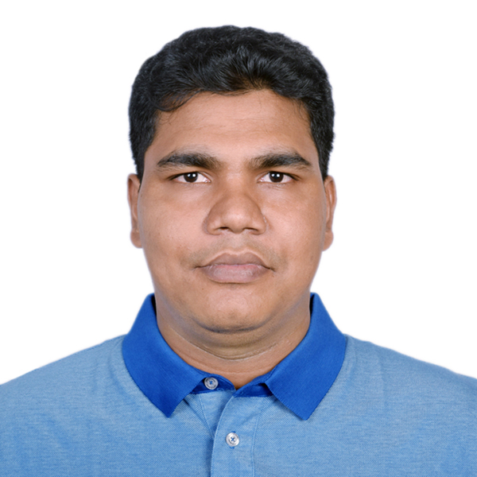

Preferred name: Adam
PhD Candidate in Physics
Department of Physics, Applied Physics and Astronomy
Binghamton University (SUNY), USA
Originally from Meherpur, Bangladesh
I study 2D magnetic materials under Prof. Zhong Lin.
I am a PhD candidate in Physics at Binghamton University (SUNY), working in the Department of Physics, Applied Physics and Astronomy. My research focuses on two-dimensional magnetic materials, with an emphasis on antiferromagnetism and spintronic phenomena. I work under the supervision of Prof. Zhong Lin.
I am originally from Meherpur, Bangladesh, and I am passionate about contributing to both scientific research and society.